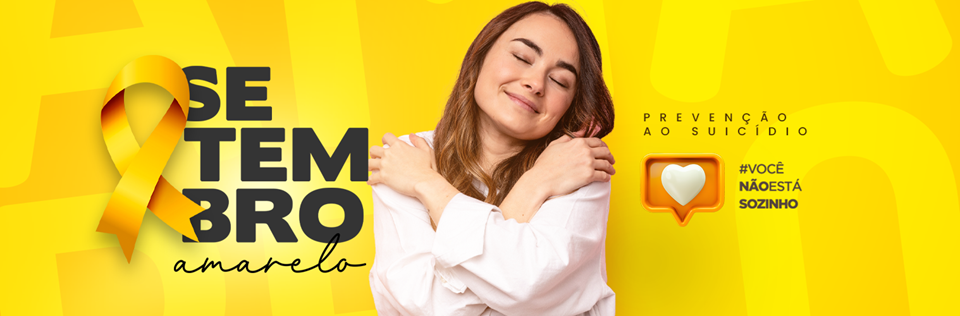

Setembro Azul: Um mundo de cores para os surdos!
Você não está sozinho: Setembro Amarelo
Um Mês para Cuidar da Saúde Mental!
O Setembro Amarelo é uma campanha muito importante que
acontece todos os anos para conscientizar as pessoas sobre
a prevenção do suicídio e a importância de cuidar da saúde mental.
Por que o Setembro Amarelo é tão importante?
Para quebrar o tabu: Muitas pessoas ainda têm vergonha de falar sobre problemas emocionais, mas é importante saber que todo mundo passa por momentos difíceis e que pedir ajuda não é sinal de fraqueza, e sim de força.
Para prevenir o suicídio: Ao falar abertamente sobre a saúde mental, podemos identificar sinais de alerta e ajudar pessoas que estão passando por dificuldades.
Para promover o bem-estar: O Setembro Amarelo nos lembra da importância de cuidarmos de nós mesmos, de praticar atividades que nos fazem bem e de buscar ajuda profissional quando necessário.
